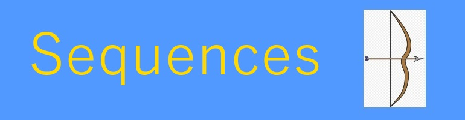

About

A Julia module implementing mathematical sequences
Build a Julia library for studying mathematical integer sequences. To this goal the library should:
Identify general methods used in generating integer sequences and provide reference implementations for important classes.
Provide a set of classical sequence-to-sequence, sequence-to-triangle and triangle-to-sequence transformations.
Provide a low level infrastructure for efficient development and testing of integer series and sequences.